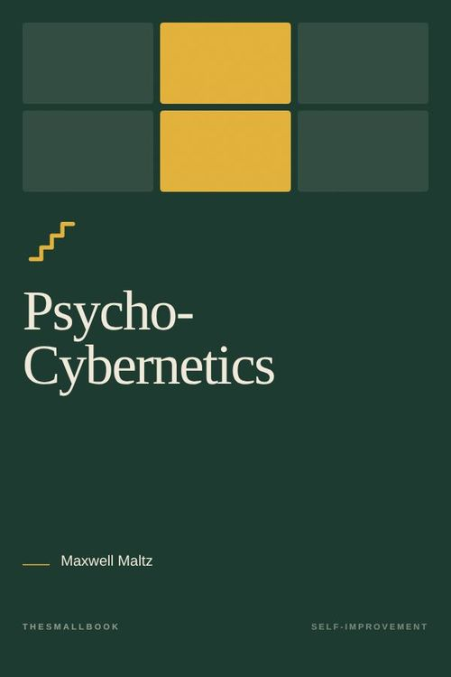

Library › Ask the Library › How do I become more confident?
How do I become more confident?
The short answer
Confidence is not a feeling you wait for, it's a track record you build. Small wins, rehearsed success, and a self-image you consciously update.
The books behind the answer

Psycho-Cybernetics
Maxwell Maltz · 1960 · 11 min · 8 lessons
You will never outperform your self-image. Upgrade the image, and the results upgrade themselves.
- The Self-Image: Your brain steers toward the picture of yourself you hold. Change the picture, change the performance.

Can't Hurt Me
David Goggins · 2018 · 9 min · 7 lessons
You're only using 40% of your capability. The other 60% sits behind a wall of suffering your mind built to protect you.
- The 40% Rule: When your mind says 'done', you're at 40%. Push past it once and confidence becomes a habit.

The 5 Second Rule
Mel Robbins · 2017 · 8 min · 6 lessons
You'll never feel like it. Count 5-4-3-2-1 and move before your brain kills the impulse - a launch code for the life you keep postponing.
- Everyday Courage: Confidence is a rep count: every small brave act adds one rep. Start with the tiny ones.

You Can Win
Shiv Khera · 1998 · 8 min · 6 lessons
Success is not an accident: attitude, positive thinking, goal-setting, and character - built step by step, the Indian classic's way.
- Attitude: The Foundation Everything Sits On: You are what you think you are. Feed the mind winning pictures and it starts producing them.
A failure that proves it
Why did New Coke fail?
1985 · BUSINESS · Loss: 79 days of chaos, permanent lesson
Coca-Cola was so insecure about Pepsi it changed its 99-year-old formula. Confidence isn't copying the rival, it's knowing who you are.
People don't buy what things taste like; they buy what things MEAN. Data is only as good as the question - and no focus group can measure what customers don't know they'd grieve.
Also asked in Hindi and Hinglish
People also ask this as: confidence kaise badhaye, khud par bharosa kaise karein. The answer on this page stays in simple English, and the live book can be read in Hindi or Hinglish.
Questions people ask next
Can I read this in Hindi?
Yes. This answer is written in simple English. Open any linked book and choose Hindi or Hinglish to read the full lessons in your language, with audio where available.